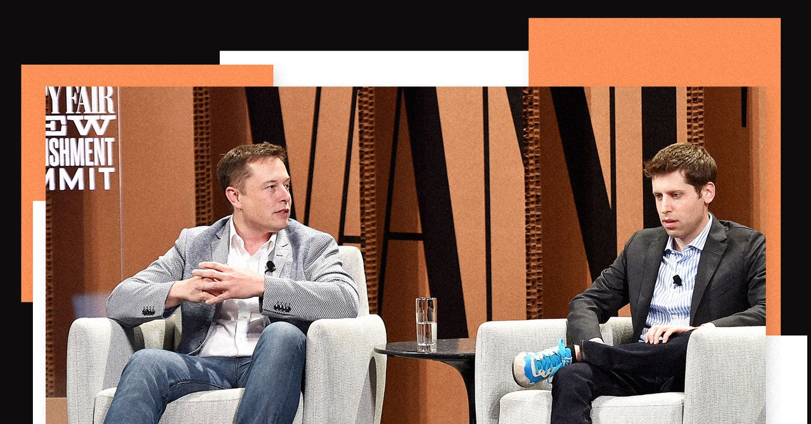
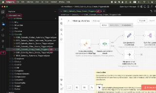
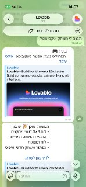

WIREDנמוכה07.05.2026, 00:00
Messages between Shivon Zilis and Tesla executives reveal plans in 2017 to start a rival AI lab, potentially led by Altman or Demis Hassabis.
אימות 1

Messages between Shivon Zilis and Tesla executives reveal plans in 2017 to start a rival AI lab, potentially led by Altman or Demis Hassabis.

סמסונג חצתה שווי של טריליון דולר והפכה לחברה השנייה באסיה שעושה זאת, על רקע ראלי במניות השבבים וביקוש גובר ל-AI. את המהלך תומכים גם הכנסות שיא ברבעון הראשון ודיווח על מגעים עם אפל לייצור שבבים.
In an unexpected turn, the two companies signed a deal for Anthropic to use computing resources from Elon Musk’s xAI.

המגמה מאפשרת לסטודנטים ולבוגרים טריים לעקוף את מסלול הכניסה המסורתי ולהשתלב מהר יותר גם בתפקידי מפתח.

Anthropic השיקה חבילה של 10 סוכני AI פיננסיים ל-Claude Code, שמיועדים לניתוח דוחות, בניית מודלים וביצוע ניתוחי שוק. לצד זה נוספו תוספים לניהול תזרים אישי ואינטגרציה ישירה עם Excel, PowerPoint ו-Word, מה שמרחיב את השימוש בכלי גם לעבודה פיננסית שוטפת.
הפרויקט `claude-receipts` מפיק אחרי כל שיחה עם AI קבלה שמציגה את צריכת הטוקנים לכל מודל ואת העלות המדויקת בשקלים ואגורות, עם אפשרות לשמור דיגיטלית או להדפיס.

OpenAI השיקה בקוד פתוח את Privacy Filter, כלי שפועל מקומית ומסנן מטקסט מידע אישי ורגיש כמו שמות, מיילים, מספרי טלפון ופרטי בנק לפני שליחתו למערכות AI. ניתן גם לכוונן את רמת הסינון כדי לצמצם דליפות בלי למחוק מידע חשוב מדי.

שוחרר תוסף ל-VSCode שמאפשר להפוך תהליכי n8n לאוטומציות מבוססות סוכני AI כמעט בלחיצה, כולל קריאת קוד, עריכה והצעות לאופטימיזציה.

אחת הדרכים להצדיק הטמעת AI בארגון היא לחבר את Claude Cowork לנתוני קמפיינים ממומנים מפייסבוק, גוגל ופלטפורמות נוספות, למשל דרך Zapier. כך אפשר להפיק תובנות ברורות, לייצר במהירות טקסטים ומודעות, ולתרגם את השימוש בכלי לערך עסקי מדיד והחזר השקעה.

תי עם AI ש״נחשף״ כשעוברים על התמונה עם העכבר ויצא ממש מגניב!

OpenAI הוסיפה לקודקס פיצ'ר של "חיות מחמד" צפות: דמות אנימציה קטנה שמופיעה מעל האפליקציות ומציגה בזמן אמת מה קורה עם הסוכנים. אפשר לבחור אחת משמונה דמויות מוכנות או ליצור דמות מותאמת עם `/hatch`, ואז להפעיל אותה דרך `Appearance`; לצד זה הוקם גם אתר קהילתי לשיתוף והתקנה של דמויות.
Codex מאפשרת לייבא בלחיצה אחת קונקטורים, סקילים, פרויקטים וצ'אטים מסוכנים אחרים, ולהמשיך מאותה נקודה בלי להגדיר הכל מחדש. זהו מהלך של OpenAI שנועד להקל על מעבר משתמשים, במיוחד מקלוד קוד.

י אחרי זה קלוד פשוט לא עוקב. לא בכוונה, זו ההתנהגות שלו. טיפ: אפשר למקם את הקובץ הזה ב-3 מקומות שונים שיש להם תפקיד שונה: 1. כחוק כללי לכל הפרויקטים מעתה והלאה 2. כחוק לפרויקט ספציפי שמשתפים עם צוות שעובד עם git 3.

הכותב מספר שהשתמש בקלוד אופוס 4.7 ובמודל התמונות החדש של GPT כדי ליצור בקלות קרוסלת אינסטגרם על סיפורה של הופ, צ'יטה מהמדבריום בבאר שבע שנפגעה בעבר וכיום מטופלת בישראל.

טרנד חדש ברשת משתמש במודל התמונות החדש של ג'יפיטי כדי לייצר מאותה תמונה כמה לוקים ותסרוקות ולהציע מה הכי מחמיא.

הנטייה של צ'אטים לבחור דווקא ב-7 כשמבקשים מהם מספר "אקראי" לא מעידה על רצון או שיקול דעת, אלא על כך שמודל שפה חוזה את הטוקן הסביר הבא לפי דפוסים בנתוני האימון. מאחר שגם בני אדם נוטים לקשר אקראיות למספר 7, המודלים פשוט משקפים את ההטיה הזו ומזכירים שלא נכון לייחס להם אישיות או לסמוך עליהם בעיניים עצומות.
Figure AI מדווחת על מעבר לייצור סדרתי של רובוט F.03, אחרי שבתוך 120 ימים הגדילה את קצב הייצור פי 24, מרובוט אחד ביום לרובוט אחד בשעה.

הכירו את Sci-Bot, כלי חיוני לכל סטודנט — עוזר בינה מלאכותית (AI) מדעי המבוסס על הארכיון הגדול בעולם של 85 מיליון מחקרים. 🔹 הוא עונה על כל שאלה מדעית, מצטט עבודות ומספק

wn in MS Paint with a mouse. It should be vaguely similar but also not really, kind of matching but also off in a confusing, awkward way, with that low-quality pixel-by-pixel feel that really emphasizes how ridiculously bad it is.

לאבבול מאפשרת לבנות ולעדכן אתרים ואפליקציות ישירות מתוך טלגרם, אחרי חיבור הבוט דרך עמוד ההגדרות.

הערוץ פתוח לשיתופי פעולה ופרסום ממומן, בתנאי שהתוכן רלוונטי לטכנולוגיה ו-AI ומספק ערך לעוקבים; לפרטים אפשר לפנות בפרטי.

הפוסט מציג טענת "חינם", אבל בלי אימות ברור מול המוצר הרשמי, ולכן צריך לראות בזה טענה שדורשת בדיקה.
הפוסט מציג טענת "חינם", אבל בלי אימות ברור מול המוצר הרשמי, ולכן צריך לראות בזה טענה שדורשת בדיקה.

הפוסט מציג טענת "חינם", אבל בלי אימות ברור מול המוצר הרשמי, ולכן צריך לראות בזה טענה שדורשת בדיקה.

הפוסט מציג טענת "חינם", אבל בלי אימות ברור מול המוצר הרשמי, ולכן צריך לראות בזה טענה שדורשת בדיקה.

הנה משהו נחמד, מישהו גאון משדרג סרטים פופולריים בעזרת בינה מלאכותית. ככה זה נראה הרבה יותר טוב!😂 #AI #בינהמלאכותית 📱 📱 📱

שיאומי פתחה את MiMo V2.5 בקוד פתוח בשתי גרסאות, כולל דגם Pro ודגם 310B מולטי-מודאלי, עם חלון הקשר של מיליון טוקנים.
הניסוח הזהיר יותר הוא: בישראל גוברת הביקורת על ההסכם המתגבש עם איראן, שלפי החששות לא יבטיח בלימה מלאה של הגרעין, הטילים הבליסטיים או פעילות השלוחים.
לפי מידע שהגיע לישראל, איראן דורשת שהסדר עם ארה"ב יכלול הפסקת לחימה גם בזירות נוספות, ונראה כי וושינגטון נענתה לכך. בצה"ל מזהירים שלא לסגת מקווי ההגנה כל עוד חיזבאללה לא פורק מנשקו, כדי לא לסכן הישג שנקנה בדם.
הניסוח הזהיר יותר הוא: לוחם צה"ל נפצע קשה ושלושה נוספים נפצעו קל מפגיעת רחפן נפץ בדרום לבנון, בזמן שבמקביל צה"ל הרחיב בלילה את התקיפות נגד תשתיות חיזבאללה בכמה מוקדים באזור.
הניסוח הזהיר יותר הוא: הבית הלבן פרסם אסטרטגיית לוחמה בטרור ל-2026 שמציבה את איראן כאיום המרכזי על ארה"ב מהמזרח התיכון, ומצהירה כי וושינגטון תמשיך לפעול נגדה ונגד שלוחותיה באמצעים צבאיים, מודיעיניים וסייבר.
בהתייחסות ראשונה לעימות האלים מול בית כנסת אורתודוכסי בניו יורק, שבו שוטר נפצע ופונה לבית חולים, ראש העיר גינה דווקא יריד נדל"ן יהודי שבו הוצעו גם נכסים בגוש עציון.
Recent hardware developments have accelerated the potential timeline for the threat to crypto networks. A sweeping new technical report warns that the cryptographic foundations securing trillions of dollars in digital assets could be broken by quantum computers

Two papers published this week have reignited debates about the risk posed by “Q-day” to the cryptography that underpins digital assets.

At a conference dedicated to the riskiest traders in finance, Miami's crypto scene appeared far different than during its pandemic-era boom.
Binance & HIP-3 lead $103B in TradFi perp volumes this April, driven by commodity hedging demand for 24/7 oil and gold access amid macro uncertainty
Sheridan, Wyoming, 5th May 2026, Chainwire

מכבי תל אביב הביסה 0:4 את הפועל פתח תקווה במשחק הבכורה של קני מילר, בתצוגת עליונות שהייתה יכולה להיגמר גם בתוצאה גבוהה יותר.

מכבי ת"א התאוששה מהטלטלה סביב עזיבת רוני דיילה עם 0:4 קל על הפועל פ"ת.

הניצחון הדרמטי 1:2 על הפועל פ"ת הרגיע מעט את הלחץ בכרמל, אבל בהנהלת הקבוצה עדיין פגועים מהביקורת של הקהל ומבהירים שהתחושות סביב המועדון רחוקות מלהירגע.

כ-50 אוהדי מכבי חיפה הגיעו לאימון בכפר גלים לפני המשחק מול הפועל פ"ת, קיללו את הצוות המקצועי והפסיקו את האימון.